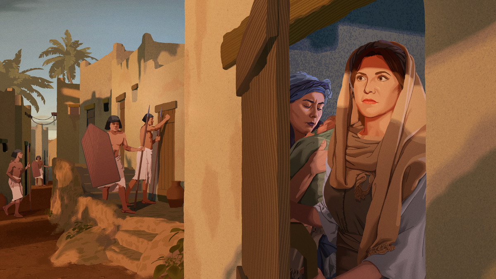
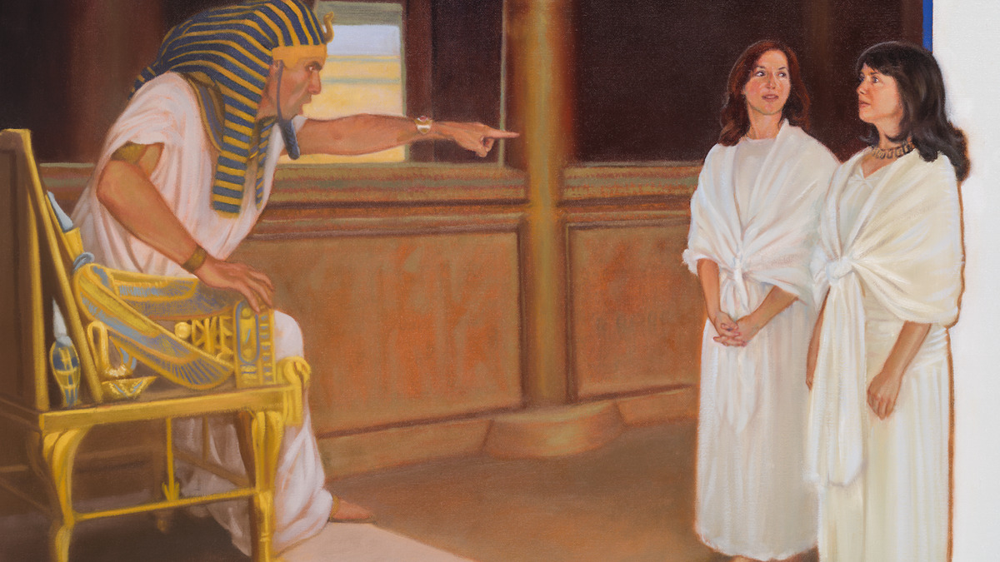

9 Sifrá, Puá, Anrão, Joquebede e Miriã
Pela fé, Moisés foi escondido
Leia o relato na Bíblia: Êxodo 1:6-22; 2:1-10; Atos 7:17-21; Hebreus 11:23
Tempo do estudo: 30 minutos
Cada parágrafo abaixo traz o conteúdo resumido, com as frases citadas do capítulo, os textos bíblicos escritos por extenso e um comentário pronto. O texto oficial completo está no jw.org e no JW Library: em cada parágrafo há um link que abre direto no ponto certo.
Já fazia mais de 60 anos que José tinha morrido, e os egípcios não se lembravam mais dele, apesar de Jeová ter usado José para salvar aquela nação da fome. O novo Faraó odiava e temia os israelitas, também chamados de hebreus. Eles continuavam crescendo em número porque tinham as bênçãos de Jeová. Por isso os egípcios tornaram os hebreus seus escravos e os tratavam muito mal, e mesmo assim o povo continuava se multiplicando.
Então Faraó planejou algo muito cruel: mandou chamar duas parteiras hebreias, Sifrá e Puá, e ordenou que matassem a criança sempre que fosse um menino. O capítulo pede que a gente imagine o sentimento delas ao receber essa ordem. Mas aquelas duas mulheres corajosas “temiam o verdadeiro Deus” e sabiam que nenhum homem, por mais poderoso que fosse, tinha o direito de obrigá-las a fazer algo errado aos olhos do Soberano do Universo. Esse respeito por Deus as ajudou a fazer algo que exigiu muita coragem: As parteiras “não fizeram o que o rei do Egito lhes havia ordenado”.

Se não fosse pela coragem das parteiras, dos seus pais e da sua irmã, o que poderia ter acontecido com o bebê Moisés?
Com o plano frustrado, o Faraó criou outra lei ainda mais cruel: todos os meninos israelitas recém-nascidos deviam ser jogados no rio Nilo. Nessa época viviam Anrão e Joquebede, que já tinham Miriã e Arão. Quando nasceu o terceiro filho, eles tentaram escondê-lo o máximo que puderam. Mas não é fácil esconder um bebê. Aos três meses, Joquebede pegou um cesto, o cobriu com betume e piche e colocou o menino ali, entre os juncos do rio.
Pouco depois, a filha de Faraó foi se banhar no Nilo, viu o cesto e mandou buscá-lo. Ao abrir, encontrou o bebê chorando e ficou com pena dele, decidindo criá-lo como filho. Só que a criança precisaria de alguém para amamentar. Miriã, que era uma menina que pensava rápido, tomou coragem e foi até a filha de Faraó: ela se ofereceu para trazer uma mulher para amamentar a criança. A princesa concordou, e Miriã trouxe a própria mãe. Imagine a alegria de Joquebede ao receber de volta o filho, agora protegido.
Será que Jeová recompensou Anrão, Joquebede e Miriã pela fé e coragem que mostraram? Com certeza. Eles ensinaram Miriã e Arão a amar e obedecer a Jeová, e viram os dois se tornarem servos fiéis. Também viram Jeová protegendo Moisés. Se chegaram a ver o tipo de homem que ele se tornou, a Bíblia não diz. Mas Miriã e Arão com certeza viram as coisas maravilhosas que Jeová fez por meio do irmão, e os três foram grandes exemplos de fé e coragem.
Para considerar
De que maneiras as parteiras e a família de Moisés mostraram coragem?
Meu comentário comentário base
Analise mais a fundo
1. Que provas existem de que os israelitas já viveram no Egito?
(g04 8/4 4 § 4 a 5 § 1)
Meu comentário comentário base
2. Que provas existem de que a Bíblia é verdadeira quando menciona o cesto de papiro e a ordem do Faraó de matar os bebês hebreus?
(g04 8/4 6 §§ 1-2) A
Meu comentário comentário base
3. O que sabemos sobre as parteiras hebreias, e como elas foram abençoadas?
(w03 1/11 8 §§ 3-4; it “Parteira”) B
Meu comentário comentário base
4. Como Miriã continuou mostrando na velhice a grande fé que teve em toda a sua vida?
(ijwia artigo 7 §§ 14-18)
Meu comentário comentário base
Medite no que aprendeu
O que os pais podem aprender de Anrão e Joquebede?
Meu comentário comentário base
Se você tem irmãos, o que pode aprender do que Miriã fez quando era pequena? C
Meu comentário comentário base
Como você pode imitar a coragem de Sifrá e Puá na sua vida?
Meu comentário comentário base
Pense no quadro completo
O que esse relato me ensina sobre Jeová?
Meu comentário comentário base
Como esse relato está relacionado com o propósito de Jeová?
Meu comentário comentário base
O que eu gostaria de perguntar para Sifrá, Puá, Anrão, Joquebede e Miriã quando eles forem ressuscitados?
Meu comentário comentário base
Aprenda mais

Veja o que podemos aprender do exemplo das mulheres que desafiaram um Faraó.
“Mulheres que alegraram o coração de Jeová” (w03 1/11 8-9 §§ 3-5).
Veja como Jeová cuida daqueles que têm coragem para obedecer a ele como governante em vez de a homens.
Vídeo “Nós pertencemos a Jeová” (6:55), disponível no jw.org.
Roteiro de 30 minutos
Estudo de livro, cinco parágrafos e as quatro seções de pergunta. Os tempos são referência: o que passar de um item, tire do outro.
Abertura com uma pergunta
“O que você faria se uma lei do país mandasse fazer algo que a Bíblia proíbe?” Depois diga onde o estudo vai chegar: cinco pessoas sem poder nenhum enfrentaram um império.
Leitura dos cinco parágrafos
Designe um irmão. É um capítulo curto, então a leitura corre rápido.
Leituras bíblicas com a assistência
Êxodo 1:15-17 e Hebreus 11:23. Os dois textos são o coração do capítulo.
Para considerar
As maneiras de coragem. Aceite dois comentários e complete com o que faltar, nomeando cada pessoa: as parteiras, o casal e a menina.
Analise mais a fundo, as quatro perguntas
Um comentário por pergunta. Na 2, peça que alguém comente a imagem A, do papiro. Na 3, destaque a bênção de Jeová às parteiras e a imagem B.
Medite no que aprendeu
É a parte que mais rende. Três minutos para os pais, dois para os irmãos, com a imagem C, e três para a coragem de Sifrá e Puá hoje.
Pense no quadro completo
Uma resposta para cada pergunta: o que aprendemos sobre Jeová e como isso se liga ao propósito dele.
Encerramento
Recomende o vídeo “Nós pertencemos a Jeová” e feche com a ideia de que Jeová guardou o nome de duas parteiras e deixou o nome do Faraó cair no esquecimento.
Se o tempo apertar
Pode cortar: a pergunta 1 de “Analise mais a fundo”, resumindo em uma frase, e a última pergunta do quadro completo.
Não pode faltar: por que as parteiras desobedeceram (temiam o verdadeiro Deus), o que os pais fizeram na prática, e as bênçãos que Jeová deu às duas mulheres.
Resumo: os pontos altos deste estudo
Para o encerramento, ou para revisar depois em casa.
O caminho que percorremos
- O poder que mandou matar. Um novo Faraó esqueceu o que José fez e escravizou o povo, que mesmo assim crescia. §1
- Duas mulheres disseram não. As parteiras temiam o verdadeiro Deus e não cumpriram a ordem do rei. §2
- Uma família agiu junto. Pai, mãe e filha, cada um com a sua parte, salvaram o bebê. §3, §4
- Jeová recompensou cada um. Deu famílias às parteiras, guardou os nomes deles e protegeu Moisés. §5
Os sete pontos altos
- Favor de governo não dura: o Faraó seguinte esqueceu tudo o que José tinha feito pelo Egito.
- Quanto mais apertavam o povo, mais ele crescia, porque quem abençoava era Jeová.
- A ordem de matar foi dada justamente a quem tinha a profissão de fazer nascer.
- Elas entenderam sozinhas que a autoridade de um rei acaba onde começa o que Deus condena.
- Joquebede não cruzou os braços: impermeabilizou o cesto e escolheu o lugar onde a princesa se banhava.
- A parte mais arriscada daquele dia foi feita por uma menina.
- Jeová guardou na Bíblia os nomes de Sifrá e Puá, e o nome daquele Faraó ninguém sabe.
Três frases para o encerramento
- “Nenhuma dessas cinco pessoas tinha poder. O que elas tinham era temor a Deus, e isso bastou.”
- “Jeová anotou o nome de duas parteiras e deixou o do rei cair no esquecimento.”
- “Fé não é esperar de braços cruzados: é fazer o que está ao seu alcance e deixar o resto com ele.”
Suas respostas
Cada campo já vem com um comentário pronto. O que você ajustar fica salvo automaticamente neste navegador, neste aparelho. Para levar para outro aparelho, ou guardar uma cópia, baixe o arquivo aqui e carregue no outro lado.
O arquivo é um .json com os seus comentários e as anotações marcadas como vistas. Carregar substitui o que estiver escrito nesta página, e a página avisa antes.
Preparação baseada no capítulo 9 do livro Ande Corajosamente com Deus, “Pela fé, Moisés foi escondido”. Publicações consultadas nas anotações: Despertai! de 8/4/2004, p. 4-6; A Sentinela de 1/11/2003, p. 8-9; Estudo Perspicaz, verbete “Parteira”. Bíblia: Tradução do Novo Mundo da Bíblia Sagrada (Edição de Estudo), wol.jw.org, com 549 versículos incluídos nesta cópia para funcionar sem internet.
Os resumos, os comentários base, as anotações coloridas e o roteiro são notas de preparação pessoal, não material publicado pelas Testemunhas de Jeová. O capítulo, as imagens e o texto da Bíblia são propriedade da Watch Tower Bible and Tract Society. O texto oficial completo está no jw.org e no JW Library, pelos links de cada parágrafo.